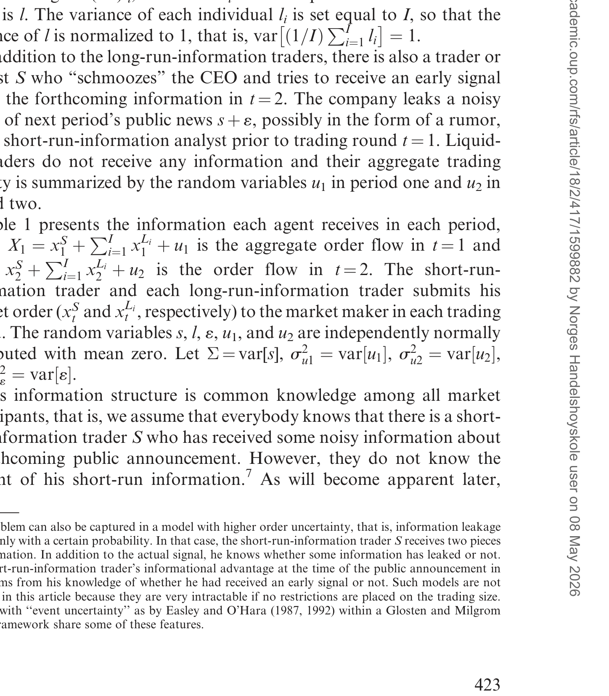
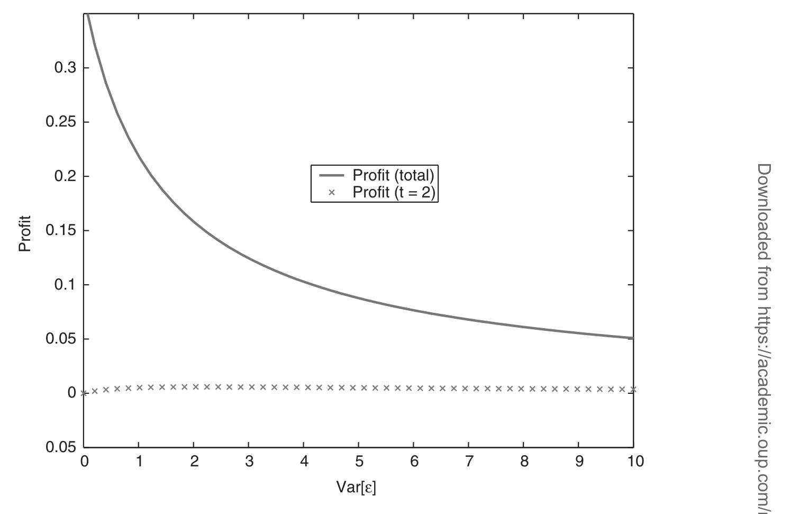
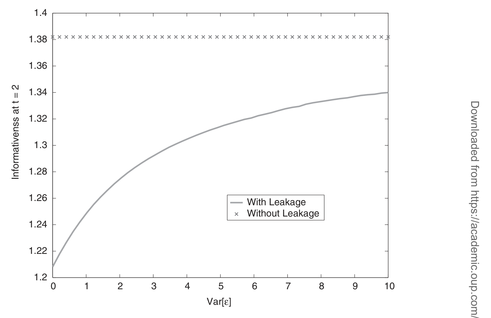
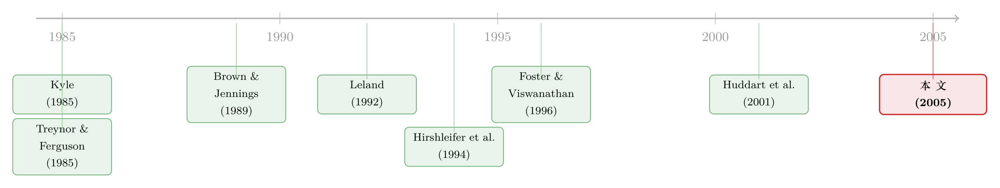

传谣时买，出新闻时卖：一个把私密信号「用两次」的内幕交易者
本文读的是 Brunnermeier (2005, Review of Financial Studies)：一个提前拿到「风声」的交易者，竟能把同一条噪声信号用两次——第一次在收到时下注，第二次在公告发布后反手平仓。表面上看，他在抢跑、在「买谣言、卖新闻」；可真正深刻的，是他事后还知道自己当初把价格推偏了多少，于是别人的技术分析全被他「迷了眼」。结论是：信息泄露让价格在短期里更灵敏，长期里却更迟钝——这正是支持监管公平披露 (Regulation FD) 的一条理论暗线。
1 一句被华尔街说反了的老话
先讲一个《纽约时报》记下来的小故事。1993 年 8 月，一家叫 BJ Services 的油气公司即将公布一份糟糕的盈利。普通散户信奉的格言是「sell on the rumor, buy on the news」——传谣言时卖、出新闻时买。可记者发现，圈内的专业人士念的是另一句反过来的经：在公司高管私下告诉你消息的时候卖，在他们把消息告诉所有人的时候买。
事情果然这么发生了：公司先把弱盈利的风声透给了几个相熟的分析师，这些分析师和他们的客户抢先猛抛，股价应声跳水；等到正式公告出来，他们又悄悄把股票买回去，反而把价格托住了。
这是一个让人很不舒服的场景：信息明明还没公开，价格却已经动了；而真正赚到钱的人，不是消息公开后才反应的大众，而是那个比谁都更早、也比谁都更晚两头占便宜的人。问题是——经济学该怎么把这件事讲清楚？提前拿到风声的人，他的最优交易策略到底长什么样？而这种行为，对整个市场的「信息效率」又意味着什么？
这正是 Brunnermeier (2005) 想回答的两件事。这篇论文的早期版本，标题就直接叫《Buy on Rumors — Sell on News》。
2 为什么「公告之后」还能继续占便宜？
我们先把直觉里最反常的一点单独拎出来，因为整篇论文的灵魂就在这儿。
按常理想，一个提前知情者 (early-informed trader) 的优势应该在公告那一刻蒸发：公告把真相摊给了所有人，而且公告通常比他当初那条模糊的小道消息还要精确。他手里那点「先知」，理应在公告发布后一文不值。
可论文偏偏说：不。他在公告之后，依然比市场里所有人都更有信息优势。
关键的机制，论文借用了 Brown and Jennings (1989) 提出的「技术分析 (technical analysis)」概念：公告发布后，所有交易者都会回头盯着过去的价格走势，试图判断「这条新闻有多少已经被price in了」。换句话说，大家想从历史价格里反推出——在公告之前，价格已经因为内幕交易偏离了多少。
但这里有一个不对称：只有提前知情的那个人，确切知道自己当初把价格推动了多少。其他人只能猜。于是，paradoxically——论文原文用的就是这个词——正是因为他当初那条信号是带噪声的、不精确的，反而让做技术分析的其他人犯了错。他们没法把「价格里有多少是真信号、有多少是他那条噪声带来的扰动」分干净。
论文给这个行为起了一个特别传神的名字：他在「throws sand in the eyes（往别人眼里扬沙子）」。下文我们会看到，这把「沙子」是整篇论文的题眼。
这与抢跑 (front-running) 不完全是一回事。抢跑赚的是「我先动手」的钱；而这里更深的一层是「我动手时故意搅浑了水，让事后所有人都读不懂价格」——短期吃点亏，长期赚更多。
3 模型设定：两类信息、两轮交易
要把上面的故事讲严谨，得先把舞台搭起来。这是一个 Kyle (1985) 式的市场微观结构模型，但信息结构被刻意做得更丰富。
资产与价值。 经济里有一只风险股票和一只无风险债券（利率归零）。股票的清算价值是两块随机量之和：
$$v = s + l$$
这里 \(s\) 是短期信息 (short-run information)，会在 \(t=2\) 公开宣布；\(l\) 是长期信息 (long-run information)，与即将发布的公告无关，要到交易结束的 \(t=3\) 才公开。所有随机变量均值为零、独立正态。记 \(\Sigma = \mathrm{var}[s]\)，\(\sigma_\varepsilon^2 = \mathrm{var}[\varepsilon]\)，\(\sigma_{u_1}^2,\sigma_{u_2}^2\) 为两轮流动性冲击的方差。
玩家。 有三类风险中性的角色：
- 短期信息交易者 S：他「schmooze（套近乎）」公司高管，在 \(t=1\) 交易前收到一条关于下期公告的带噪信号 \(s+\varepsilon\)——这就是那条「谣言」。
- 长期信息交易者 \(L_i\)（共 \(I\) 个）：每人各拿到长期信息的一小片 \(\tfrac{1}{I}l_i\)。论文把每个 \(l_i\) 的方差设为 \(I\)，于是 \(\mathrm{var}\!\left[\tfrac{1}{I}\sum_{i=1}^I l_i\right]=1\)，即长期信息的总方差被标准化为 1，且分散在众多交易者手里。分析聚焦于 \(I\to\infty\) 的极限。
- 做市商 (market maker)：风险中性、面临 Bertrand 竞争，观察总订单流后定出半强式有效的价格，期望利润为零。
时序。 交易分两轮（\(t=1\) 与 \(t=2\)）。\(t=2\) 交易之前，公告把 \(s\) 公开。下面这张表把「谁在什么时候知道什么」一次说清——它就是论文的 Table 1。

Table 1: presents the information each agent receives in each period
定价规则。 做市商设的价格是给定其信息集的最优估计：
$$p_1 = E[v\mid X_1] = \lambda_1 X_1$$
$$p_2 = s + E[l\mid X_1, s] + \lambda_2\bigl\{X_2 - E[X_2\mid X_1, s]\bigr\}$$
其中 \(X_1 = x_1^S + \sum_{i} x_1^{L_i} + u_1\) 与 \(X_2 = x_2^S + \sum_i x_2^{L_i} + u_2\) 是两轮的总订单流，\(\lambda_t\) 沿用 Kyle (1985) 的含义——订单每增加一单位对价格的冲击，其倒数就是「市场深度」。
整个均衡是一个序贯理性的贝叶斯纳什均衡 (sequentially rational Bayesian Nash equilibrium)，用线性纯策略和逆向归纳求解。
4 那把「沙子」：核心方程
现在我们把论文最关键的一步拆开。
\(t=2\) 时，市场参与者想从 \(t=1\) 的历史价格 \(p_1\) 里做技术分析。给定大家相信的均衡策略 \(\{b_1^S, b_1^L, \lambda_1\}\)，在 \(s\) 被公告之后，从过去价格里能榨出的那条「价格信号 (price signal)」是：
盯着这条式子看：其他交易者和做市商只能观察到 \(T\) 这一团混合物。他们想从中提取 \(l\)，但 \(T\) 里掺着 \(\tfrac{b_1^S}{b_1^L}\varepsilon\) 这一项——而 \(\varepsilon\) 是只有 S 自己才知道的那条噪声。
于是真正关键的一步出现了：S 知道自己第一轮下了多大的单，因此他能把 \(\tfrac{b_1^S}{b_1^L}\varepsilon\) 这一项从 \(T\) 里减干净，别人却不能。这就是为什么哪怕公告把更精确的 \(s\) 公之于众，S 在 \(t=2\) 依然握着一份别人没有的信息优势（论文的 Lemma 1）。
更妙的是它的反直觉含义：S 的优势大小，恰恰取决于他那条信号有多「脏」。\(\sigma_\varepsilon^2\) 越大、他交易得越凶（\(b_1^S\) 越大），扬进别人眼里的沙子就越多，事后别人的技术分析就越糊涂。短期里这么做有成本——更激进的交易会让价格更快地暴露他的方向——但它换来的是未来更大的、以及总体更高的预期资本利得。
这也顺带解释了与 Kyle (1985) 的一个微妙差别。在 Kyle 里，内幕者要收着点下单，免得过早把信息泄露给做市商；而在这里，「收着」的动机被削弱了，因为更激进反而能把沙子扬得更厚、把别人迷得更久。
5 「买谣言、卖新闻」是怎么从模型里长出来的
有了上面的机制，那句华尔街老话就成了模型的一个推论。
收到一条正面的模糊信号后，S 会买入；但他预期，市场会对随后的公告反应过度 (overreact)——价格会 overshoot。既然如此，理性的做法就是先建仓，再打算在公告之后部分平掉这笔仓位。反过来，收到负面信号则先卖、再买回。这正是 BJ Services 故事里分析师们做的事。
这里要和 Hirshleifer, Subrahmanyam, and Titman (1994) 划清界限：他们也得到了交易反转，但那是因为风险厌恶的内幕者在信息扩散后急于卸掉风险头寸；而在本文里，所有人都是风险中性的，反转纯粹来自「我预期市场会过度反应、于是留一手等着反着做」的策略动机。
不过论文很诚实地补了一句：数值模拟显示，尽管 S 预期会在公告后平掉相当一部分仓位，他的大头利润其实是在公告之前赚到的。所以他只是比一个「短视 (myopic)」的交易者略微更激进一点而已——这把沙子虽好，但也不必扬得太狠。
下面这张图刻画了 S 的事前总体获利，如何随信号噪声、市场深度等参数变化（论文 Figure 3）。

Figure 3: shows that the short-run-information trader’s ex ante overall
6 真正的代价：长期价格变笨了
故事讲到这儿，还只是「一个聪明人怎么赚钱」。但论文的标题叫《信息泄露与市场效率》，它真正的野心，是回答这种行为对市场有没有害。
这里论文做了一个很有用的概念区分，值得记住：
- 信息效率 (informational efficiency)：价格相对于「全经济体汇总信息」的含量——它是个相对概念。
- 信息量 (informativeness)：价格在绝对意义上揭示了多少信息——论文认为，这才是对监管者更相关的尺子。
用这两把尺子一量，结论是分裂的：
- 在做市商风险中性、价格对公开信息服从鞅过程的意义上，市场是半强式有效的；但从 S 的视角看，公告时价格平均会 overshoot，所以市场不是强式有效的。
- 信息泄露让价格在公告前后都变得更不「信息有效」。
- 但在信息量这把尺子上出现了时间维度的权衡 (trade-off)：泄露让价格在短期里更有信息量（公告前价格抢先反映了部分真相），代价却是长期里更没有信息量。
第 3 点是全文的落点，也是它对前人文献的真正增量——下面这张图把「负的长期效应」画了出来（论文 Figure 5）。

Figure 5: also shows that the negative long-run effect of information
为什么长期更要紧？论文接上了 Leland (1992) 的逻辑链：更不灵敏的价格会推迟不确定性的消解、抬高未来波动，从而让公司融资更贵。Brunnermeier 的关键观察是——信息泄露通常只发生在正式公告前的几天，而公司极少在这么短的窗口里融资；所以短期那点信息量的「收益」抵不过长期信息量的「损失」。于是他得出了与 Leland (1992) 相反的政策结论。
这就把论文接到了现实监管上：2000 年 10 月 SEC 推出的公平披露条例 (Regulation Fair Disclosure, Reg FD)，强制公司向所有投资者同时披露重大信息。本文的分析说：只要 Reg FD 真能堵住信息泄露，它就能提升长期信息效率与信息量——这是一条支持 Reg FD 的理论论据。（关于 Reg FD 在评级机构那扇「窗」上的漏洞，可参见《监管关上了一扇门，却忘了锁上评级机构那扇窗》。）
论文也没把话说满：如果 Reg FD 不只堵住泄露，还连带让公司推迟或干脆不发关于短期事项的公告，那它就可能适得其反。两种效应孰强孰弱，是一个实证问题。
7 文献脉络
把这条线索捋一捋，能更清楚地看到本文站在哪儿。
源头是 Kyle (1985)：风险中性内幕者、噪声交易者、定价的做市商，这套语言此后几乎成了一切策略性交易模型的母语。与 Kyle 几乎同时，Treynor and Ferguson (1985) 写了一篇「为技术分析辩护」的文章，论证从历史价格里学信息并非全是迷信——本文「公告后做技术分析」的桥段，正是这条线的直系后裔。Brown and Jennings (1989) 把技术分析正式建进了理性预期模型。

接着，一个自然的问题是：当信息会逐步在不同交易者间扩散时会怎样？Hirshleifer, Subrahmanyam, and Titman (1994) 给出了「有人比别人早知道」时的交易反转，但那靠的是风险厌恶。规范分析的另一支——Leland (1992)、Fishman and Hagerty (1992)、Ausubel (1990)——则争论内幕交易到底有没有损害价格的信息功能，但它们大多只有一轮交易，因而无法分析公告之后的信息效率。
本文真正的位置，是把 Foster and Viswanathan (1996) 那种多期、相互「猜测彼此预测」的策略交易框架，与「短期 vs 长期信息」的二分结构嫁接起来：让一个交易者拿到短命的抢跑信号、其余人收集长寿的基本面信息。由此第一次把「内幕交易对长期信息效率的影响」以及「短期与长期信息量之间的动态权衡」讲清楚。它也和 Huddart, Hughes, and Levine (2001) 形成对照——后者让内幕者用混合策略来掩盖自己，而本文里混合策略可以被排除，靠的是「扬沙子」让别人学不到第三方的信息。
（关于「机构在公告前就已站好队」的实证一面，可参见《财报还没发，机构已经站好了队》；关于研报发布前那条「通风报信」的暗线，见《报告还没发，他们已经先买了五天》。）
8 评论与延伸（Q&A + 研究方向）
(a) 几个可能的疑问
Q：公告明明比谣言更精确，凭什么提前知情者在公告后还有优势？
优势不来自他对 \(s\) 知道得更多——公告后大家对 \(s\) 知道得一样多。优势来自他独家知道自己第一轮把价格推偏了多少，因而能把价格信号 \(T\) 里那项 \(\tfrac{b_1^S}{b_1^L}\varepsilon\) 减干净，别人减不掉。这是对他人长期信息 \(l\) 的技术分析优势，不是对 \(s\) 的。
Q：这跟普通的抢跑 (front-running) 有什么不同？
抢跑只赚「我先动手」的一次性钱。本文多了一层：他动手的方式会故意污染事后所有人的技术分析，从而在公告之后二次获利。论文把这叫「往别人眼里扬沙子」，Pagano and Röell (1993) 那类抢跑模型里没有这第二层。
Q：「市场会过度反应」是假设进去的吗？会不会循环论证？
不是外生假设。在均衡里，做市商定的价格对公开信息是鞅、半强式有效的；但从 S 的私有信息视角看，价格在公告时平均 overshoot。也就是说，过度反应是相对于 S 信息集的一个内生结论，而非强加的行为偏差。
Q：所有人都风险中性，反转还能成立吗？
恰恰是本文的卖点。Hirshleifer 等 (1994) 的反转靠风险厌恶卸仓，本文在全员风险中性下仍得到反转，机制纯粹是「预期市场过度反应、于是留一手反着做」，把风险偏好这个混杂因素剔了出去。
Q：为什么强调「长期」信息量，而不是公告时点的效率？
因为对监管者真正要紧的是融资成本。沿 Leland (1992)，更不灵敏的长期价格会推迟不确定性消解、抬高未来波动、抬高融资成本；而泄露多发生在公告前几天，公司极少在这窗口融资。所以短期那点信息量收益，抵不过长期损失。
Q：这篇是否一边倒地支持 Reg FD？
不。它支持的是「Reg FD 堵住泄露」这一面。但论文明说，若 Reg FD 反而让公司推迟甚至取消短期事项的公告，则可能适得其反——孰强孰弱是实证问题。这种克制恰是它高于纯口号的地方。
(b) 几个可能的研究问题与提案
1. 把「扬沙子」搬进公司债市场。 【经济故事】公司债是 OTC、报价驱动、透明度更低的市场，「提前知情者污染事后价格学习」的机制在这里可能更强：交易商而非集中做市商承担价格发现，沙子可能扬得更久。 【可行性】中。可用 TRACE 逐笔成交 + 评级下调/盈利预警事件，对比「泄露窗口」内外的价格反转与长期价格信息量。识别难点在于区分「泄露」与「正常的私有信息生产」，需要事件窗口的干净外生性。
2. Reg FD 之后，长期信息量真的提升了吗？ 【经济故事】本文给出可证伪预测：堵住泄露 ⇒ 长期价格信息量上升。这是一个尚未被直接检验的「长期」命题（多数 Reg FD 实证只看公告窗口的短期效应）。 【可行性】中。以 2000 年 10 月 Reg FD 为断点，用价格对未来已实现基本面的预测力 (price informativeness) 作被解释变量，做事件前后对比。难点是同期市场结构（小数报价、ECN 兴起）的混杂。
3. 外资持有人是「扬沙子」的人，还是「被扬沙子」的人？ 【经济故事】外资常被认为信息劣势，但若本地关联方提前拿到风声，外资恰是技术分析中被污染的一方。本文机制预测：泄露越严重的市场，外资在公告后的执行越吃亏。 【可行性】中。需带交易者身份的逐笔数据（如韩国 KRX），把订单按本地/外资分层，看公告后反转中谁是输家。与《外资真有「信息劣势」吗？》的设定天然衔接。
4. 信号「脏度」与交易激进度的结构估计。 【经济故事】本文给出一个反直觉比较静态：\(\sigma_\varepsilon^2\) 越大、S 越愿意激进交易。能否从数据里把「私有信号噪声」和「交易强度」一起反推出来，检验这条曲线？ 【可行性】低到中。需要在结构模型框架下识别 \(b_1^S, \sigma_\varepsilon^2\)，对数据要求很高（须观测到疑似知情者的下单序列），更像一篇方法论+小样本的论文。
5. 当「是否泄露」本身不确定时。 【经济故事】论文正文已暗示一个「事件不确定性 (event uncertainty)」的扩展——市场只知道泄露以一定概率发生。此时 S 的二重优势来自「只有他知道到底有没有收到风声」。这条线尚未被完整刻画。 【可行性】低。论文坦言此类模型若不对交易规模设限会非常难解（intractable），但若结合 Easley and O'Hara (1987, 1992) 的事件不确定性框架，或有可为。
9 我的判断
这篇论文的贡献，在于它用一个干净的两期 Kyle 模型，把一句市井格言——「买谣言、卖新闻」——翻译成了可推导的均衡行为，并且逼出了一个前人结构看不到的结论：内幕交易对市场效率的损害，主要落在长期信息量上，而短期信息量的「改善」是一种会误导监管者的假象。「往别人眼里扬沙子」这个机制尤其漂亮——它把内幕者交易激进度与信号噪声之间那条反直觉的正相关，讲成了一件理所当然的事。
对识别（这里是理论的「识别」即稳健性）的担忧，我有三点。其一，结论高度依赖线性正态结构与单一短期信息交易者的设定，论文第 4 节虽讨论了多个短期交易者的推广，但「沙子」机制在交易者互相竞争扬沙时是否还稳健，值得更细的检验。其二，「市场会 overshoot」是相对 S 信息集而言的内生结论，但它依赖做市商恰好用线性规则定价；一旦做市商也开始策略性地反推 \(\varepsilon\)，优势可能被侵蚀。其三，也是最重要的——全文的政策含义建立在「泄露只发生在公告前几天、公司不在此窗口融资」这一经验判断上，而这恰恰是没有被模型内生、需要数据来背书的一环。
我接下来最想看到的，是把这套「短期 vs 长期信息量」的尺子真正搬到数据上：Reg FD 之后，价格对未来已实现基本面的长期预测力是否如本文所言上升了？这是一个干净、可证伪、却至今少有人正面回答的问题。
参考文献
Ausubel, L. M. (1990). Insider Trading in a Rational Expectations Economy. American Economic Review 80(5), 1022–1041.
Blume, L., Easley, D., and O'Hara, M. (1994). Market Statistics and Technical Analysis: The Role of Volume. Journal of Finance 49(1), 153–181.
Brown, D. P., and Jennings, R. H. (1989). On Technical Analysis. Review of Financial Studies 2, 527–552.
Brunnermeier, M. K. (2005). Information Leakage and Market Efficiency. Review of Financial Studies 18(2), 417–457.
Easley, D., and O'Hara, M. (1987). Price, Trade Size, and Information in Securities Markets. Journal of Financial Economics 19, 69–90.
Fishman, M. J., and Hagerty, K. M. (1992). Insider Trading and the Efficiency of Stock Prices. Rand Journal of Economics 23(1), 106–122.
Foster, D. F., and Viswanathan, S. (1996). Strategic Trading When Agents Forecast the Forecasts of Others. Journal of Finance 51(4), 1437–1478.
Hirshleifer, D., Subrahmanyam, A., and Titman, S. (1994). Security Analysis and Trading Patterns When Some Investors Receive Information Before Others. Journal of Finance 49, 1665–1698.
Huddart, S., Hughes, J. S., and Levine, C. (2001). Public Disclosure and Dissimulation of Insider Trades. Econometrica 69(3), 665–681.
Kyle, A. S. (1985). Continuous Auctions and Insider Trading. Econometrica 53, 1315–1335.
Leland, H. E. (1992). Insider Trading: Should It Be Prohibited? Journal of Political Economy 100(4), 859–887.
Treynor, J. L., and Ferguson, R. (1985). In Defense of Technical Analysis. Journal of Finance 40, 757–775.